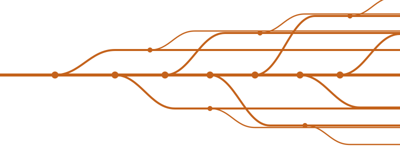
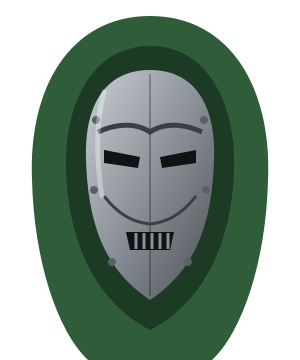

The Sacred Timeline breaks
The TVA once pruned every branch of time. When He Who Remains is killed, the multiverse grows wild, and Loki ends up holding it together.


For years these universes ran side by side and never met. Since 2021 they've been crossing over, and everything points to Avengers: Doomsday (18 Dec 2026) and Secret Wars (Dec 2027). Each line is a separate universe, and each dot is a film that pulled it toward the MCU. Click a dot or a case file to open the title.
The TVA once pruned every branch of time. When He Who Remains is killed, the multiverse grows wild, and Loki ends up holding it together.
Strange's spell pulls in Tobey Maguire's and Andrew Garfield's Peters and five villains. Venom and the Vulture cross over in Sony's films at the same time.
Patrick Stewart's Xavier (in a yellow hover-chair, just like the 90s cartoon) and John Krasinski's Reed Richards turn up, then the Scarlet Witch kills them.
Kamala Khan is revealed as a mutant. Later, Monica Rambeau wakes up next to Kelsey Grammer's Beast as the X-Men '97 theme plays.
Kingpin in Hawkeye, Matt Murdock in No Way Home and She-Hulk, then Born Again brings Daredevil, Kingpin and the Punisher fully into the MCU.
The TVA's dumping ground at the end of time. Deadpool and a variant Wolverine find Blade, Elektra, Johnny Storm, Gambit and X-23 there. Their home universe only survives because its anchor, Logan, is saved.
A retro-future New York where the Fantastic Four are the only heroes. The post-credits scene teases Doom, and the family is in the Doomsday cast.
Robert Downey Jr. returns as Victor von Doom. The cast announced in 2025 mixes MCU Avengers, Wakandans, the Thunderbolts, the Fantastic Four, and Fox X-Men veterans: Stewart, McKellen, Cumming, Romijn, Marsden, Grammer, and Channing Tatum's Gambit.
The planned end of the Multiverse Saga. Nothing beyond the title and date is official yet, so it isn't connected to anything here.